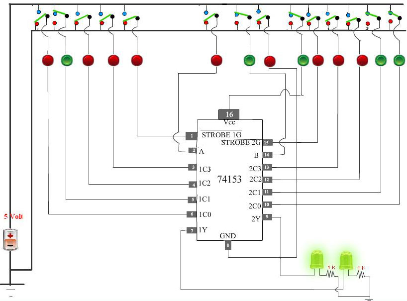
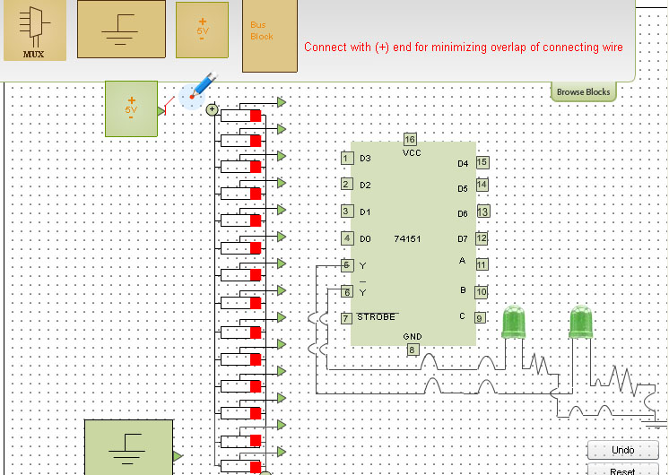
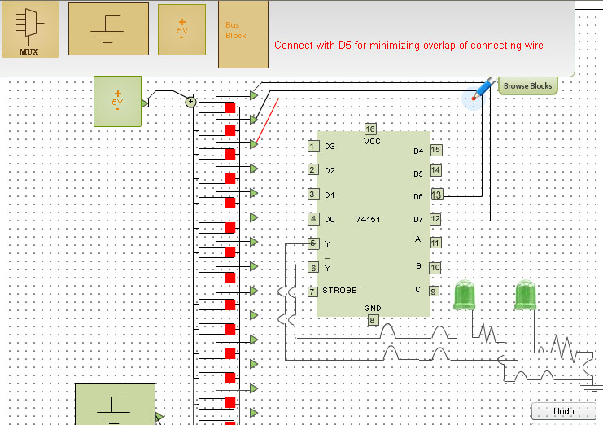
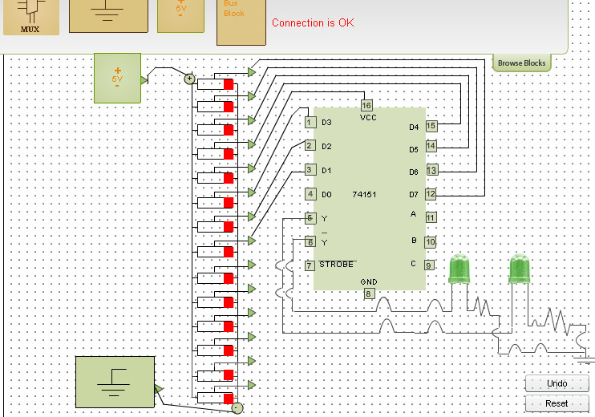

Introduction
About the Experiment
This experiment enables a student to learn
- How to realize functionality of Dual 4 Line to 1 Line Multiplexer using 74153 IC
- How Dual 4 Line to 1 Line Multiplexer select the particular input to be sent to the output IY{1 = 1, 2}.
- How Each of the strobe signals IG {I = 1, 2} acts as an enable signal for the corresponding 4-to-1 M multiplexer.
- How to realize functionality of Quad 2 Line to 1 Line Multiplexer using 74157 IC
- How Quad 2 Line to 1 Line Multiplexer select the particular input to be sent to the output IY{1 = 1, 2, 3, 4}.
- How the strobe signal acts as an enable signal for each of the four 4-to-1 M multiplexers.

Theory
74153 is a dual 4 line-to-1 line multiplexer. It has the schematic representation shown
in Fig 1. Selection lines A and B select the particular input to be multiplexed and
applied to the output IY{1 = 1, 2}.
Each of the strobe signals IG {I = 1, 2} acts as an enable signal for the corresponding
multiplexer.
Figure 2(a) & 2(b) shows the multiplex function of 74153 in terms of select lines. Note that each
of the on-chip multiplexers act independently from the other, while sharing the same
select lines A and B.

Figure 1(74153)
Figure 2(a) x:don't care state
Figure 2(b) x:don't care state
The above circuit diagram shows the detail gate level structure of 74153(Dual 4 line to 1 line Multiplexer)
74157 is a quad 2 line-to-1 line multiplexer. It has the schematic representation shown in Fig 3. Select line select the particular input to be multiplexed and applied to the output IY{1 = 1, 2, 3, 4}. Strobe signal acts as an enable signal for each of the four multiplexers. Figure 4(a) & 4(b) & 4(c) & 4(d) shows the multiplex function of 74157 in terms of select lines. Note that each of the on-chip multiplexers act independently from the other, while sharing the same select line.
Figure 3(74157)
Figure 4(a) x:don't care state
Figure 4(b) x:don't care state
Figure 4(c) x:don't care state
Figure 4(d) x:don't care state
The above circuit diagram shows the detail gate level structure of 74157(Quad 2 line to 1 line Multiplexer)
74151 is a 8 line-to-1 line multiplexer. It has the schematic representation shown
in Fig 5. Three select lines(A,B,C) select the particular input to be multiplexed and
applied to the output Y, Y is the inverted output of the original outpu(Y).
Strobe signal or Enable signal
should be low to ensure proper multiplexing operation.If Enable is made high,then the output Y will always be low irrespective
of any logic levels asserted by select lines A, B, C and the eight inputs.
An 8-to-1 Multiplexer can be used to implement any 3-variable switching function.
For example, consider the function
F (A,B,C) = &Sigma m (0,3,5)
Then the inputs D0, D3 and D5 should be set to logic 1 while the remaining five inputs we set to logic '0'.
Thus, for A = 0, B = 0, C = 0 Y = D0 = '1'
for A = 0, B = 1, C = 1, Y = D1, = '1'
for A = 1, B = 0, C = 1, Y = D5, = '1'
For the remaining combination of A, B, C Y = '0'.

Figure 5(a)
Figure 5(b): Truth Table

The principal objective of this experiment(Part 1) is to fully understand the functionality of a Dual 4 line to 1 line Multiplexer(IC 74153) and to show the multiplex function of 74153 in terms of select lines. Note that each of the on-chip multiplexers act independently from the other, while sharing the same select lines.
The principal objective of this experiment(Part 2) is to fully understand the functionality of a Quad 2 line to 1 line Multiplexer(IC 74157) and to show the multiplex function of 74157 in terms of select line. Note that each of the on-chip multiplexers act independently from the other, while sharing the same select line.


Digital Principles and Applications, by Leach and Malvino.
Digital Logic Design, Leach, by Malvino, and Saha
Engineering Digital Design, by Richard F. Tinder.
Digital Logic and Computer Design, by M. Morris Mano
Digital Systems: Principles and Applications, Neal S. Widmer , Ronald J. Tocci , Gregory L. Moss
Figure 1(74153)
| Strobe | Select Lines | Outputs | |
| 1G | A | B | 1Y |
| 1 | x | x | 0 |
| 0 | 0 | 0 | 1C0 |
| 0 | 0 | 1 | 1C1 |
| 0 | 1 | 0 | 1C2 |
| 0 | 1 | 1 | 1C3 |
Figure 2(a) x:don't care state
| Strobe | Select Lines | Outputs | |
| 2G | A | B | 2Y |
| 1 | x | x | 0 |
| 0 | 0 | 0 | 2C0 |
| 0 | 0 | 1 | 2C1 |
| 0 | 1 | 0 | 2C2 |
| 0 | 1 | 1 | 2C3 |
Figure 2(b) x:don't care state
The above circuit diagram shows the detail gate level structure of 74153(Dual 4 line to 1 line Multiplexer)
74157 is a quad 2 line-to-1 line multiplexer. It has the schematic representation shown in Fig 3. Select line select the particular input to be multiplexed and applied to the output IY{1 = 1, 2, 3, 4}. Strobe signal acts as an enable signal for each of the four multiplexers. Figure 4(a) & 4(b) & 4(c) & 4(d) shows the multiplex function of 74157 in terms of select lines. Note that each of the on-chip multiplexers act independently from the other, while sharing the same select line.
Figure 3(74157)
| Strobe | Select | Inputs | Outputs | |
| A1 | B1 | 1Y | ||
| H | x | x | x | L |
| L | L | L | x | L |
| L | L | H | x | H |
| L | H | x | L | L |
| L | H | x | H | H |
Figure 4(a) x:don't care state
| Strobe | Select | Inputs | Outputs | |
| A2 | B2 | 2Y | ||
| H | x | x | x | L |
| L | L | L | x | L |
| L | L | H | x | H |
| L | H | x | L | L |
| L | H | x | H | H |
Figure 4(b) x:don't care state
| Strobe | Select | Inputs | Outputs | |
| A3 | B3 | 3Y | ||
| H | x | x | x | L |
| L | L | L | x | L |
| L | L | H | x | H |
| L | H | x | L | L |
| L | H | x | H | H |
Figure 4(c) x:don't care state
| Strobe | Select | Inputs | Outputs | |
| A4 | B4 | 4Y | ||
| H | x | x | x | L |
| L | L | L | x | L |
| L | L | H | x | H |
| L | H | x | L | L |
| L | H | x | H | H |
Figure 4(d) x:don't care state
The above circuit diagram shows the detail gate level structure of 74157(Quad 2 line to 1 line Multiplexer)
An 8-to-1 Multiplexer can be used to implement any 3-variable switching function.
For example, consider the function
F (A,B,C) = &Sigma m (0,3,5)
Then the inputs D0, D3 and D5 should be set to logic 1 while the remaining five inputs we set to logic '0'.
Thus, for A = 0, B = 0, C = 0 Y = D0 = '1'
for A = 0, B = 1, C = 1, Y = D1, = '1'
for A = 1, B = 0, C = 1, Y = D5, = '1'
For the remaining combination of A, B, C Y = '0'.
Figure 5(a)
| Strobe | Select Lines | Inputs | Outputs | ||||||||||
| A | B | C | D0 | D1 | D2 | D3 | D4 | D5 | D6 | D7 | Y | Y | |
| H | X | X | X | X | X | X | X | X | X | X | X | L | H |
| L | L | L | L | H | X | X | X | X | X | X | X | H | L |
| L | L | L | L | L | X | X | X | X | X | X | X | L | H |
| L | L | L | H | X | H | X | X | X | X | X | X | H | L |
| L | L | L | H | X | L | X | X | X | X | X | X | L | H |
| L | L | H | L | X | X | H | X | X | X | X | X | H | L |
| L | L | H | L | X | X | L | X | X | X | X | X | L | H |
| L | L | H | H | X | X | X | H | X | X | X | X | H | L |
| L | L | H | H | X | X | X | L | X | X | X | X | L | H |
| L | H | L | L | X | X | X | X | H | X | X | X | H | L |
| L | H | L | L | X | X | X | X | L | X | X | X | L | H |
| L | H | L | H | X | X | X | X | X | H | X | X | H | L |
| L | H | L | H | X | X | X | X | X | L | X | X | L | H |
| L | H | H | L | X | X | X | X | X | X | H | X | H | L |
| L | H | H | L | X | X | X | X | X | X | L | X | L | H |
| L | H | H | H | X | X | X | X | X | X | X | H | H | L |
| L | H | H | H | X | X | X | X | X | X | X | L | L | H |
Figure 5(b): Truth Table
Objective
Aim of the Experiment
The principal objective of this experiment(Part 1) is to fully understand the functionality of a Dual 4 line to 1 line Multiplexer(IC 74153) and to show the multiplex function of 74153 in terms of select lines. Note that each of the on-chip multiplexers act independently from the other, while sharing the same select lines.
The principal objective of this experiment(Part 2) is to fully understand the functionality of a Quad 2 line to 1 line Multiplexer(IC 74157) and to show the multiplex function of 74157 in terms of select line. Note that each of the on-chip multiplexers act independently from the other, while sharing the same select line.
Procedure
Please follow these steps to do the experiment.
Part 1:
- At first go through the structure of 74153.Then apply high level voltage to Vcc and low level voltage to GND. If Vcc and ground are not connected properly then error message will be shown and no output will be generated.
- 2. Next, apply high level voltage to Strobe1G or strobe 2G. If STROBE 1G is high 2nd Multiplexer is activated . If STROBE 2G is high then 1st Multiplexer is activated. .
- 3. Next, apply low level voltage to the select inputs A and B (A Most significant Bit,B Less significant bit). Then apply a high level voltage to 2C0. Now check that how Dual 4 Line to 1 Line Multiplexer select the particular input to be multiplexed and to be applied to the output IY{1 = 1, 2}.
- 4. For all the combinations of the select inputs A,B verify that both the LEDs are glowing or not glowing. If the LED glows, it indicates that the corresponding output has reached logic 1 level. Similarly a dark LED indicates low level output voltage.
- 5. If both the Strobe inputs are low then both Multiplexers are activated.
- 1. At first go through the structure of 74157.Then apply high level voltage to Vcc and low level voltage to GND. If Vcc and ground are not connected properly then error message will be shown and no output will be generated.
- 2. Next, apply high level voltage to Strobe input.Now check that all the LEDs are not glowing.Soall the outputs are at low state .
- 3. Next, apply low level voltage to the Strobe input and also apply low level voltage to the Select input. Then apply high level voltage to A1,A2,A3,A4.Now check that all the LEDs are glowing.Because inputs are properly multiplexed to the outputs of the four multiplexers according to the voltage applied to the select input.
- 4. Next, apply low level voltage to the Strobe input and apply high level voltage to the Select input. Then apply high level voltage to B1,B2,B3,B4. Now check that all the LEDs are glowing.Because inputs are properly multiplexed to the outputs of the four multiplexers according to the voltage applied to the select input.
- 5. If the LED glows, it indicates that the corresponding output has reached logic 1 level. Similarly a dark LED indicates low level output voltage.
- 1. At first click on the Browse Block button
- 2. Next, drag the mux block and drop it onto the bread board.
- 3. Next, drag the Bus block and drop it onto the bread board.
- 4. Next, drag the Voltage block and drop it onto the bread board.
- 5. Next, drag the Ground block and drop it onto the bread board.
- 5. Next, make a connection from voltage block to positive end of the bus block.
- 6. Next, make a connection from ground block to negitive end of the bus block.
- 7. Next, make a connection from switch A to D7 of the MUX block.
- 8. Next, make a connection from switch B to D6 of the MUX block.
- 8. Next, make a connection from switch C to D5 of the MUX block.
- 9. Next, make a connection from switch D to D4 of the MUX block.
- 10. Next, make a connection from switch E to VCC of the MUX block.
- 11. Next, make a connection from switch F to D3 of the MUX block.
- 12. Next, make a connection from switch G to D2 of the MUX block.
- 13. Next, make a connection from switch H to D1 of the MUX block.
- 14. Next, make a connection from switch I to D0 of the MUX block.
- 15. Next, make a connection from switch J to STROBE of the MUX block.
- 15. Next, make a connection from switch K to GND of the MUX block.
- 16. Next, make a connection from switch L to C input of the MUX block.
- 17. Next, make a connection from switch M to B input of the MUX block.
- 18. Next, make a connection from switch N to A input of the MUX block.
- 17. Next, apply high level voltage to VCC and apply low level voltage to GND and also apply low level voltage to the three select inputs A(MSB),B and C(LSB).
- 19. Next, apply high level voltage to D0 input.
- 20. Now check that output Y attains logic high state.
- 21. Next, apply low level voltage to A(MSB) and B and apply high level voltage to C(LSB).
- 22. Next, apply high level voltage to D1 input.
- 23. Now check that output Y attains logic high state.
- 24. Next, apply high level voltage to B and apply low level voltage to A(MSB) C(LSB).
- 25. Next, apply high level voltage to D2 input.
- 26. Now check that output Y attains logic high state.
- 27. Next, apply high level voltage to C and B high and apply low level voltage to A(MSB).
- 28. Next, apply high level voltage to D3.
- 29. Now check that output Y attains logic high state.
- 30. For all the combinations of the select inputs A,B,C verify that both the LEDs are glowing or not glowing. If the LED glows, it indicates that the corresponding output has reached logic 1 level. Similarly a dark LED indicates low level output voltage.



Part 2:

Part 3:





The 14 switches constituting the Bus Block are denoted as A,B,C...N as one goes bottomwards starting with the top switch A .








Simulator

|
|
Quizzes
Not now
Reference